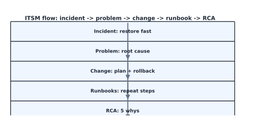

Systems Maintenance, Automation, and IT Service Management#
Learning Objectives#
Schedule preventive and respond to corrective maintenance.
Run patch management safely.
Apply incident / problem / change management (ITIL).
Perform Root Cause Analysis.
Author operational runbooks.
Operate AWS Systems Manager and Automation Documents.
Maintenance: Preventive vs Corrective#
Type |
When |
Goal |
AWS mechanism |
|---|---|---|---|
Preventive |
scheduled before failure |
avoid downtime |
SSM Patch Manager, lifecycle upgrades |
Corrective |
after failure |
restore service |
incident response, rollback |
Adaptive |
environment change |
keep compatible |
OS/dependency upgrades |
Perfective |
improve quality |
performance/usability |
tuning, refactoring |
A Maintenance Window is scheduled, communicated downtime; the smaller the window, the more important automation and pre-validation become.
Patch Management#
Patch management = find → test → approve → deploy → verify → record.
{kind=link}

Fig. 20 ITSM flow: incident -> problem -> change -> runbook -> RCA.#
SSM Patch Manager#
Agentless-ish on EC2 (SSM agent) / use the unified CloudWatch agent + Systems Manager.
Patch baselines define which packages/versions are approved (by severity) + patch rules (e.g., “all Critical, Security within 7 days”).
Schedule via Maintenance Windows; monitor patch compliance dashboards.
Safe patching order#
dev → staging (canary) → production canary node → full rollout. Keep a rollback AMI/snapshot and a documented plan — a patch is itself a change (below).
ITIL: Incident / Problem / Change#
The three daily motions of an operations team.
Incident (fix now) → Problem (find root cause) → Change (plan+rollback)
Process |
Goal |
Outcome |
|---|---|---|
Incident |
restore normal service FAST |
service is up again |
Problem |
eliminate root cause of incidents |
fewer repeat incidents |
Change |
add/modify/remove with controlled risk |
a tracked, reversible change |
Change types#
Standard = pre-approved (low risk).
Normal = reviewed by change advisory board (CAB).
Emergency = urgent, post-approved + post-implemented review.
Every change needs a rollback plan and a test of that rollback.
Root Cause Analysis (RCA)#
RCA finds the underlying cause, not the symptom.
Five whys: keep asking “why” until you reach a process/decision cause.
Fishbone (Ishikawa): group candidates into Man, Method, Machine, Material, Measurement, Environment.
Not blame. RCA asks “what system let this happen?” — then strengthens the system.
Example: site slow → CPU spike → rogue cron job → no resource limit → no CI check on cron size.
RCA culture
A blame culture suppresses honest reporting. Measure and reward fixes, not finger-pointing.
Operational Runbooks#
A runbook is the step-by-step playbook for a recurring operational task.
A good runbook includes:
Pre-conditions, impact (customer-facing?), and rollback trigger.
Exact commands, success criteria, and how to verify.
Escalation contacts & notification steps.
Example runbook snippet — restart a web service#
1. Check: systemctl status nginx (expect "failed")
2. Graceful first: nginx -t && systemctl reload nginx
3. If still failing: systemctl restart nginx
4. Verify: curl -s -o /dev/null -w "%{http_code}" http://localhost (expect 200)
5. Rollback: systemctl stop nginx ; check logs / journalctl -xe
Idempotent runbooks are best: “ensure nginx is running” not “start nginx.”
AWS Systems Manager#
SSM is the operational core for fleet management without opening SSH ingress.
Capability |
What it does |
|---|---|
Run Command |
execute scripts on many hosts at once |
Session Manager |
browser/CLI shell over TLS, no open ports, audited |
State Manager |
keep hosts compliant to a declared state (config drift control) |
Parameter Store |
versioned config + encrypted secrets (no hard-coding) |
Patch Manager |
automated, scheduled patching |
Fleet Manager |
unified monitoring & troubleshooting of EC2 |
SSM requires the SSM agent + an instance profile (AmazonSSMManagedInstanceCore).
# run shell script on all hosts tagged Role=web
aws ssm send-command \
--document-name AWS-RunShellScript \
--parameters commands="['yum install -y htop']" \
--Targets "Key=tag:Role,Values=web"
AWS Automation Documents#
An Automation document (AWS::SSM::Document, action aws::runCommand etc.) is a
declarative, multi-step, auditable workflow — e.g., “rotate root credentials,”
“perform OS upgrade,” “drain connections then patch.”
description: Graceful web service restart
schemaVersion: "1.0"
parameters:
InstanceId: { type: String }
mainSteps:
- name: PreFlight
action: aws:runCommand
inputs:
DocumentName: AWS-RunShellScript
Parameters:
commands: ["systemctl status nginx || true"]
- name: Restart
action: aws:runCommand
inputs:
DocumentName: AWS-RunShellScript
Parameters:
commands: ["systemctl reload nginx || systemctl restart nginx"]
Tip
Build your routine runbooks as Automation documents so the plan == the execution path, and always include an explicit rollback path tested regularly.
Checkpoint#
Q1. Why is a runbook ideally idempotent?
Answer. So running it once or many times leaves the system in the same correct state — no accidental double-actions or partial failures.
Q2. What single difference separates an incident from a problem?
Answer. An incident is about speed (restore now); a problem is about recurrence (find root cause so the incident doesn’t repeat).
Q3. Name two places an EC2 patch can happen before touching production.
Answer. A Maintenance Window/Patch baseline, and — before that — the change should be tested in a staging/ dev account (canary approach).
Q4. Which SSM capability gives you shell access without SSH inbound, and is logged?
Answer. Session Manager (creates an auditable, TLS tunnel session).
Q5. In the Five Whys, when should you stop?
Answer. Stop when a further “why” leads to a process/system root cause (not a person), and you identify a concrete fix to close the loop (add a control or test).
Sources#
The concepts in this chapter are summarized from the following authoritative sources:
AWS Systems Manager User Guide: https://docs.aws.amazon.com/systems-manager/latest/userguide/
AWS CloudFormation drift detection: https://docs.aws.amazon.com/AWSCloudFormation/latest/UserGuide/
ITIL 4 guidance: https://www.axelos.com/best-practice-solutions/framework/itil